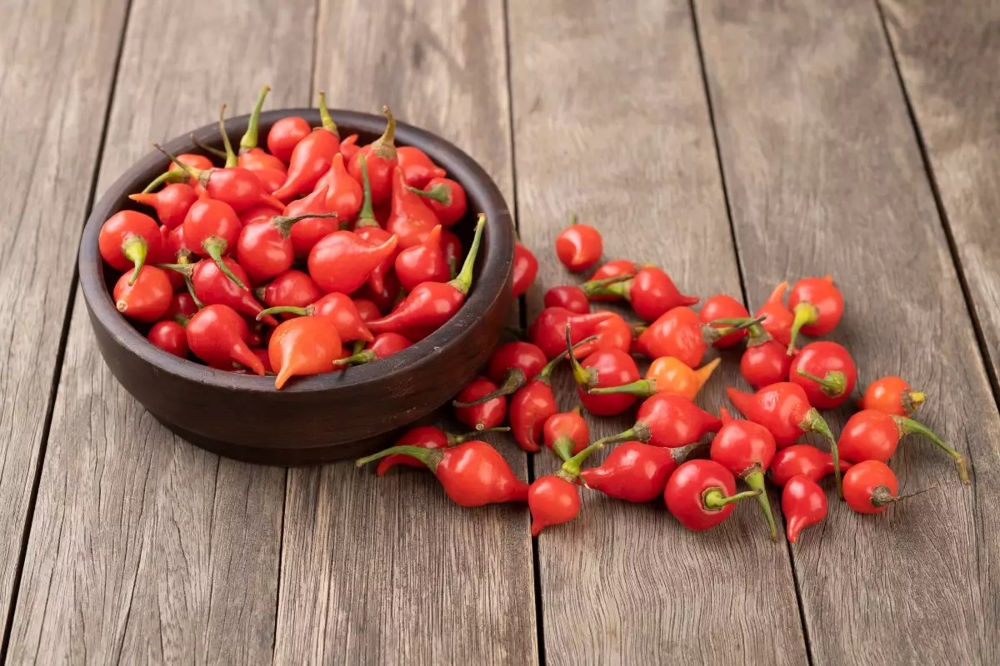
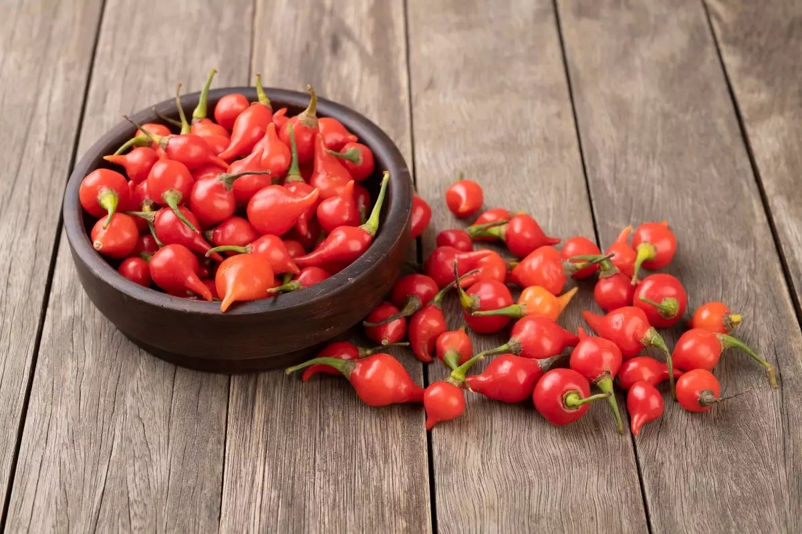

Tambem chamada como a pimenta de bico, ela pertence a mesma espécie das pimentas (habanero de cheiro, bode), cumari-do-Oará e Murupi. Todas essas pimentas são muito aromáticas e saborosas, mas o ardir pode ser bem suave, como no biquinho ou muito picante como na habanero.
A Biquinho comecou a ser comercializada no Triângulo Mineiro, no inicio da década de 2000, mas johe pode ser encontrada em todo o território nacional.

 <<<<<<< HEAD
=======

>>>>>>> 18be18bd44e321f18267911e819b7754f4b1d5d1
<<<<<<< HEAD
=======

>>>>>>> 18be18bd44e321f18267911e819b7754f4b1d5d1